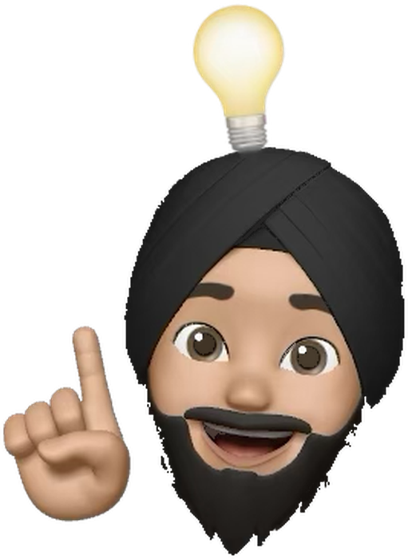

1 of 3
Active by nature
I like to balance staying active with time outdoors. A football game, a gym session or a long walk in nature. It clears my mind, keeps me disciplined and keeps me positive.

UX designer. Problem solver. Driven by purpose.
I'm a UX designer who cares about the small moments where people get stuck.
Working in software support, I watched real customers use the products I now design. It taught me that most problems are hiding in plain sight.
1 of 3
I like to balance staying active with time outdoors. A football game, a gym session or a long walk in nature. It clears my mind, keeps me disciplined and keeps me positive.
2 of 3
I've always been curious about what makes digital experiences engaging and memorable. Trying new products, getting lost in a game, or noticing the detail in a film.

3 of 3

I'm fascinated by how culture shapes the way we think. Understanding different perspectives is key to designing things that are inclusive and meaningful.

Every pass makes the idea a little more useful and a little more human. Then I go round again.
Step 1 of 6
I start with the current solution and use it the way a real person would, not the way it was meant to be used.
Step 2 of 6
Where do people hesitate, backtrack or give up? Those moments become the brief.
Step 3 of 6
I analyse how others solve the same problem, noting what's worth learning from and what to avoid.
Step 4 of 6
Sketches, flows and rough layouts. Quantity first, judgement later.
Step 5 of 6
I use AI to widen the range of visual directions quickly and find a bit of flair I might not reach alone.
Step 6 of 6
Then I challenge what the AI suggested, cut anything generic and shape it around real users. And assess again.